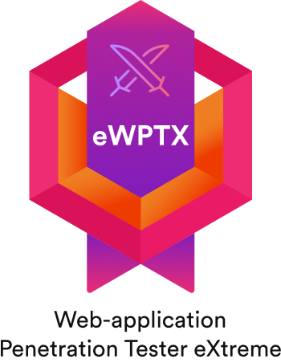
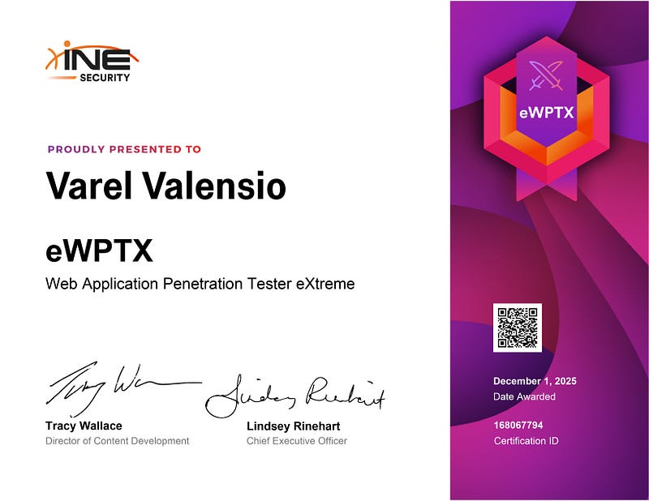

eWPTXv3 Certification Review

Hello World! So, my friend bought the eWPTXv3 certification because it was on sale at the time. I asked him whether it was good or not, and he said it was pretty solid. And guess what—on December 1st, there was a Black Friday discount where the price dropped to $199.50 (around Rp 3,300,000). So I decided to buy eWPTXv3 and start working on it immediately.
At first, I was overthinking because I was scared eWPTXv3 would have tons of rabbit holes. And since v3 is different from v2—where v2 used to be a full exam report—this one is multiple choice. You run the labs and answer the questions provided. So now I want to talk about what’s good and what’s bad about eWPTXv3. Let’s goo.
Good!
The practical format is modern and fast. v3 gives you 18 hours with lab tasks and multiple-choice questions. The nice part is once you submit all answers, the result comes out instantly—no more waiting for reviewers like in v2.
The labs are structured and focus on real-world cases. There are lots of advanced web exploitation techniques like JWT abuse, API issues, broken authentication, and more. It's definitely more relevant to actual work.
And lastly… the discount, hahaha. Let’s be honest, I bought this because it was on sale. Plus, I wanted to learn anyway. In my workplace, this cert is quite recognized. Since I’m trying to get a salary raise, I just bought it hahaha. (just kidding… maybe)
Bad!
First, some of the questions are unclear or just weird. For example, there was a question like, “How many web servers and endpoints exist on this IP?”. And they expect you to answer this with multiple choice? The question itself sounds like it wants two numbers, but the MCQ expects only one. Like bro… which one are we choosing?
Another example is: “What is the name of the API endpoint responsible for XYZ?”
Okay easy, but do you want the name only or the full path like /api/userinfo? Kinda annoying because they don’t specify the expected format. A simple hint like “answer using /path/to/endpoint” would solve this.
Second, the lab environment itself. I used wfuzz for username enumeration and suddenly the whole lab lagged out. I had to restart it multiple times. Sometimes the screen even went blank. That kills the mood, and when you reset, all your progress is gone. Pain.
Third, blind spots. From what I read, some people couldn't find any NoSQLi or LDAP issues at all. Which is weird, because if the exam asks about them and you didn't encounter them in your environment, you're screwed. It becomes a “skill issue” moment real quick.
Tips for Passing the Exam
-
Prepare coffee. If you're stuck, take a 15–20 minute break and then continue.
-
Don’t overthink the exam. Honestly, it’s easier than v2. Just do clean recon and stay organized.
-
Use a one-domain-one-folder structure. Example: make
example.com,api.example.com, etc. Keep things clean. Start from the main domain and perform recon with dirb/wfuzz and so on. -
Prepare by studying NoSQLi, JWT, API pentesting, and similar topics. These will show up later, from JWT cracking to user enumeration to exploiting OpenAPI and more.
-
Tools you’ll be using a lot: Wfuzz, Burp Suite, your browser, public exploits, sqlmap, and whatever else you prefer. Just adjust according to your workflow.

Conclusion
Overall, eWPTXv3 is a solid certification if you’re aiming to level up your advanced web exploitation skills. The practical labs, the modern exam format, the instant grading, and the real-world scenarios make it a good investment—especially if you grab it during a discount.
But yeah, it’s not perfect. Some questions feel unclear, the lab environment can be unstable at times, and there are a few blind spots depending on how your lab instance behaves. Still, none of these are deal-breakers as long as you stay calm, organized, and patient during the exam.
If you prepare properly—learn the core attack vectors, practice recon, understand JWT/API/NoSQLi topics, and use the right tools—you’ll be able to pass without stressing too much.
At the end of the day, eWPTXv3 is worth it if you're looking for a hands-on, real-case web exploitation exam that actually helps you grow as a pentester. And hey… a little discount never hurts.